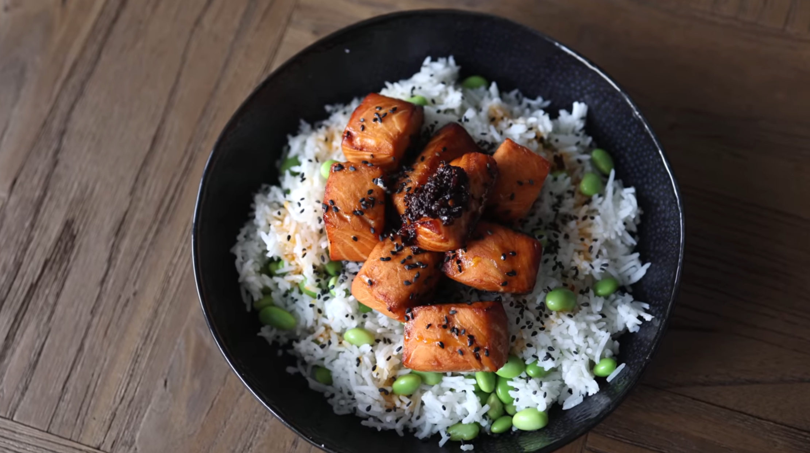

Teriyaki Salmon

Description
A rice bowl with salmon marinated in teriyaki, edamame, and chili oil.
Ingredients
- Salmon
- White Rice
- Edamame
- Teriyaki Marinade
- Chili Oil
- Roasted Sesame Seeds (optional)
Steps
- Marinate salmon in teriyaki for at least one hour.
- Cook rice.
- Defrost/cook edamame.
- Cut salmon into equal chunks. Cook in air fryer for 8 minutes at 350° F.
- Add rice, edamame, and salmon to a bowl and top with a spoonful of chili oil and sesame seeds.